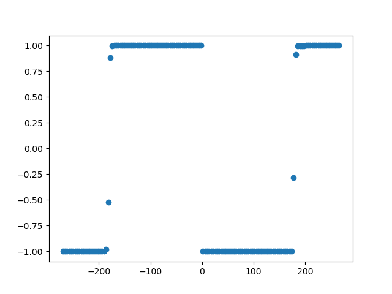

Weighted phase lag index#
This function may be called for data in the time domain, the frequency domain, or (if correctly aligned) in the complex coherency domain.
Note
Use the following function for time domain data.
- sfc.td.run_wpli(data1, data2, fs, nperseg, nfft, window='hann', pad_type='zero')#
This function calculates the weighted phase lag index between two signals.
- Parameters
data1 – First dataset from time domain; vector of samples.
data2 – Second dataset from time domain; vector of samples.
fs – Sampling frequency.
nperseg – Number of data points per segment.
nfft – FFT window size.
window – FFT window type. Supported window types are listed at https://docs.scipy.org/doc/scipy/reference/generated/scipy.signal.get_window.html.
pad_type – Padding type, currently only “zero” padding is supported.
- Returns
(bins, conn) - Frequency bins and corresponding weighted phase lag index values.
Note
Use the following function for frequency domain data.
- sfc.fd.run_wpli(data_1, data_2)#
This function calculates the weighted phase lag index between two signals.
- Parameters
data_1 – First dataset from the frequency domain domain; vector of frequency domain samples.
data_2 – Second dataset from the frequency domain; vector of frequency domain samples.
- Returns
Connectivity between data_1 and data_2 measured using the weighted phase lag index.
Note
Use the following function for complex coherency domain data.
- sfc.cd.run_wpli(s_xy)#
This function calculates the weighted phase lag index between two signals.
- Parameters
s_xy – List of complex coherency estimates calculated from two signals.
- Returns
Connectivity estimated based on the provided complex coherency measured using the weighted lag slope index.
The following code example shows how to apply the weighted phase lag index to measure sfc.
import numpy as np
import matplotlib
matplotlib.use("Qt5agg")
import matplotlib.pyplot as plt
import finn.sfc.td as td
import finn.sfc.fd as fd
import finn.sfc.cd as cohd
import finn.sfc._misc as misc
import demo_data.demo_data_paths as paths
def main():
data = np.load(paths.fct_sfc_data)
frequency_sampling = 5500
frequency_peak = 30
noise_weight = 0.2
phase_min = -270
phase_max = 270
phase_step = 4
frequency_target = 30
nperseg = frequency_sampling
nfft = frequency_sampling
#Generate data
offset = int(np.ceil(frequency_sampling/frequency_peak))
loc_data = data[offset:]
signal_1 = np.zeros((loc_data).shape)
signal_1 += loc_data
signal_1 += np.random.random(len(loc_data)) * noise_weight
conn_vals = list()
fig = plt.figure()
for phase_shift in np.arange(phase_min, phase_max, phase_step):
loc_offset = offset - int(np.ceil(frequency_sampling/frequency_peak * phase_shift/360))
loc_data = data[(loc_offset):]
signal_2 = np.zeros(loc_data.shape)
signal_2 += loc_data
signal_2 += np.random.random(len(loc_data)) * noise_weight
plt.cla()
plt.plot(signal_1[:500], color = "blue")
plt.plot(signal_2[:500], color = "red")
plt.title("Signal shifted by %2.f degree around %2.2fHz" % (float(phase_shift), float(frequency_peak)))
plt.show(block = False)
plt.pause(0.001)
conn_value_td = calc_from_time_domain(signal_1, signal_2, frequency_sampling, nperseg, nfft, frequency_target)
conn_value_fd = calc_from_frequency_domain(signal_1, signal_2, frequency_sampling, nperseg, nfft, frequency_target)
conn_value_coh = calc_from_coherency_domain(signal_1, signal_2, frequency_sampling, nperseg, nfft, frequency_target)
if (np.isnan(conn_value_td) == False and np.isnan(conn_value_fd) == False and np.isnan(conn_value_coh) == False):
if (conn_value_td != conn_value_fd or conn_value_td != conn_value_coh):
print("Error")
conn_vals.append(conn_value_td if (np.isnan(conn_value_td) == False) else 0)
plt.close(fig)
plt.figure()
plt.scatter(np.arange(phase_min, phase_max, phase_step), conn_vals)
plt.show(block = True)
def calc_from_time_domain(signal_1, signal_2, frequency_sampling, nperseg, nfft, frequency_target):
return td.run_wpli(signal_1, signal_2, frequency_sampling, nperseg, nfft)[1][frequency_target]
def calc_from_frequency_domain(signal_1, signal_2, frequency_sampling, nperseg, nfft, frequency_target):
fd_signals_X = list()
fd_signals_Y = list()
for block_start in np.arange(0, np.min([len(signal_1), len(signal_2)]) - nperseg, nperseg):
loc_signal_1 = signal_1[block_start:(block_start + nperseg)]
loc_signal_2 = signal_2[block_start:(block_start + nperseg)]
seg_signal_X = misc._segment_data(loc_signal_1, nperseg, pad_type = "zero")
seg_signal_Y = misc._segment_data(loc_signal_2, nperseg, pad_type = "zero")
(bins, fd_signal_X) = misc._calc_FFT(seg_signal_X, frequency_sampling, nfft, window = "hann")
(_, fd_signal_Y) = misc._calc_FFT(seg_signal_Y, frequency_sampling, nfft, window = "hanning")
fd_signals_X.append(fd_signal_X[0, :])
fd_signals_Y.append(fd_signal_Y[0, :])
return fd.run_wpli(fd_signals_X, fd_signals_Y)[np.argmin(np.abs(bins - frequency_target))]
def calc_from_coherency_domain(signal_1, signal_2, frequency_sampling, nperseg, nfft, frequency_target):
s_xy = list()
for block_start in np.arange(0, np.min([len(signal_1), len(signal_2)]) - nperseg, nperseg):
loc_data1 = signal_1[block_start:(block_start + nperseg)]
loc_data2 = signal_2[block_start:(block_start + nperseg)]
seg_data_X = misc._segment_data(loc_data1, nperseg, pad_type = "zero")
seg_data_Y = misc._segment_data(loc_data2, nperseg, pad_type = "zero")
(_, f_data_X) = misc._calc_FFT(seg_data_X, frequency_sampling, nfft, window = "hann")
(_, f_data_Y) = misc._calc_FFT(seg_data_Y, frequency_sampling, nfft, window = "hann")
s_xy.append((np.conjugate(f_data_X[0, :]) * f_data_Y[0, :] * 2))
s_xy = np.asarray(s_xy)
return cohd.run_wpli(s_xy)[frequency_target]
The weighted phase lag index is a reliable measure of connectivity which is directionless, yet sensitive to volume conduction.
